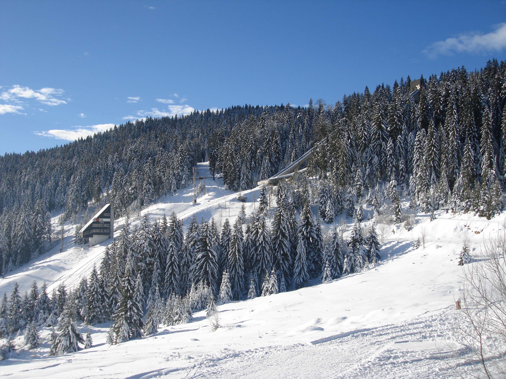

Biathlon

While researching what a Biathlon is, it occured to me that I did not know what an athlon is. An athlon is derived from latin meaning athletic contest, or a labourous task or struggle. With that in mind a biathlon is a combination of two athletic contests, specifically, Cross-country skiing and rifle shooting. Some people may think it odd to combine shooting and skiing, but it turns out its actually steeped in tradition. The Encyclopædia Britannic claims that the biathlon "is rooted in the skiing traditions of Scandinavia, where early inhabitants revered the Norse god Ullr as both the ski god and the hunting god".
A typical Biathlon is 20km in length and has either two or four shooting rounds, half of which must be completed in a prone position. Whoever finishes first, wins. Biathlon's use .22-caliber rifles, weighing approx 3.5 kilograms. A missed shot means the skier is penalized, either in the form of extra time or extra distance required before they are finished racing.
The Biathlon is practiced in western countries like Canada and the US, however, it is most populair in European and Northeastern countries like Germany, France, Norway, Sweden and Russia.
![Veronika Vítková][images/Oberhof.jpg]